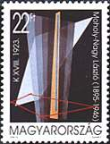
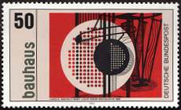

| Revised:
02/11/01
. Copyright © 2000 - 2011 by Victor Manta, Switzerland and 1996-2011 by Dr. Claude Wainstein, France. All rights reserved worldwide. |
|
|
|
 |
 |
|
| K XVIII, 1923 | ||
| by Làszlò Moholy - Nagy | ||
A page of Dr. Claude Wainstain, France
K XVIII, 1923
When,
in 1923, the Bauhaus managers decided to hire a new teacher, they appealed
Moholy-Nagy, a young Hungarian who recently came from Budapest and was already
quite famous for his abstract compositions and his theoretical writings. The
consequences of such a choice were decisive. Moholy-Nagy completely changed
the spirit of the well-known Weimar School, introducing the industrial rigor
and the geometrical abstraction he got from the Russian constructivists.
He had discovered painting in Odessa, in 1917, while recovering from a serious
war-injury, and the quiet law-student from a good Jewish family turned suddenly
into an avant-garde artist, the revolutionary days exaltation as back-cloth.
Multi-gifted autodidactic man, a kind of proletarian Mahler in worker-dress
and wearing iron-circled glasses, Moholy-Nagy was able to do everything, construction,
collage, typography, artistic conception, "everything", said his
students ironically, "but speak German without any accent".
He pottered strange glass, wood and iron scaffoldings,
had them crossed by moving light-rays, then called them "Space modulators",
like the one appearing on the German stamp issued on Feb. 08, 1983. He also
had a passion for experimental photography, invented new printing types, and
declaimed, in front of his stupefied students: "Light, total Light will
breed the total Man ! "
In 1934, Moholy-Nagy had to leave Germany, and after two years of wandering,
he ultimately settled in Chicago, where he managed the "New Bauhaus"
and then the "Institute of Design". This man who the Nazis called
"Judeo-Bolshevik", was called by the communists "a dogmatic"
and "slave of capitalist economy". So we had to wait until these
last years cultural thaw (i.e. the fall of communism in East Europe) to see
one of his compositions, called "K-XVIII", on an Hungarian stamp,
issued on Sep 18th 1995.
Very few know how much this artist influenced our daily life, and that we
owe him not only our flexible desk-lamps and our chrome-steeled-coffee-pots
design, but also the elegant typography which makes this magazine look so
stylish. "MOHOLY-NAGY was also the name of a boutique, Galerie Vivienne,
in Paris, where, a few years ago, the Bauhaus master's own grand-son was selling
luxurious shirts. "At least, " his ancestors would have said , "at
least, a real job for a Jew! ". Claude Wainstain. Article
published in L’Arche, April 1996
Link:
| Revised:
02/11/01
. Copyright © 2000 - 2011 by Victor Manta, Switzerland and 1996-2011 by Dr. Claude Wainstein, France. All rights reserved worldwide. |
|
|